Group
Powell Nguyen - Developer
Thao Uyen Chau - Designer
Tools
Procreate, Piskel, Unity
Timeline
2 months, March - May, 2023
Brief
Through this game, our team seeks to bring attention to the hardship faced by sheltered animals.
Cats and dogs that are not adopted quickly would often be euthanized. Older animals, black cats, and pit bulls
usually have the lowest adoption rates. The game mechanic reflects the challenges these animals face by making
it more difficult to jump or decreasing the timing required to accomplish tasks. The character designs are adorable
and colorful to evoke a feeling of lightheartedness and fun to sharply contrast with the harsh reality confronting sheltered animals.
Play the game HERE
The process of creating the game includes:
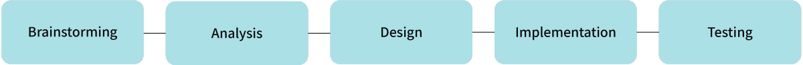
Brainstorming
My partner and I brainstormed together to come up with ideas, themes, and genres of game we want to create. We were both inspired by Super Mario
and love our pets. Therefore, we decided to create a 2D platformer game with a pet theme that also has an impactful message.
Analysis
I did some research to find our target audience. According to a Petfood Industry's survey, Millenials and Gen Z are the groups that are most likely to adopt pets.
Therefore, I decided that our target audience will be young professionals who are active, single, and value their emotional well-being.
This group is more likely to adopt pets to help reduce their stress level and spend time with their animal companions.
After selecting the target audience, the color scheme and art style were decided.
Design
I used Pixel app to design and animate game assets including backgrounds, characters, and collectible items. I also designed sounds for the game using Audacity.
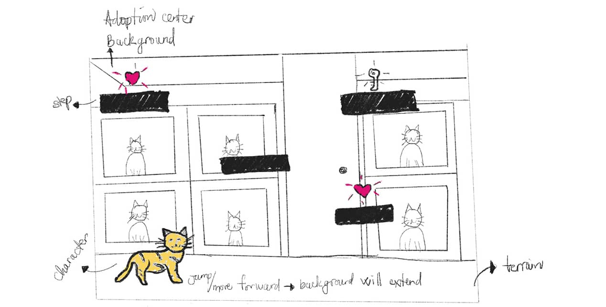
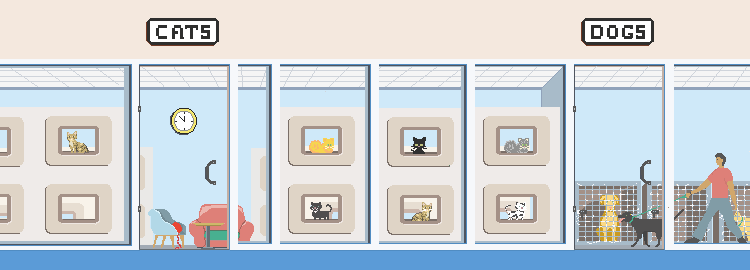
 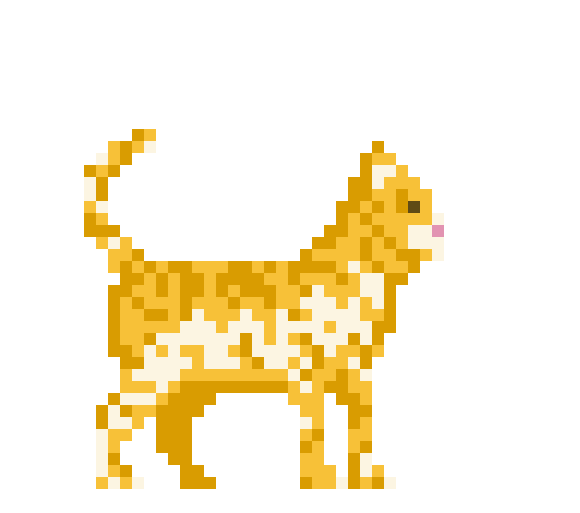
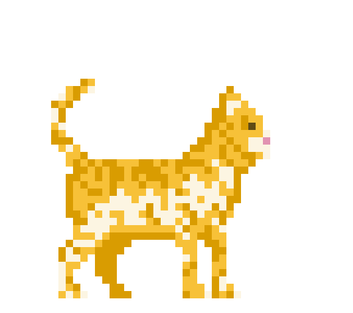
 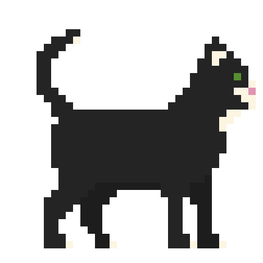
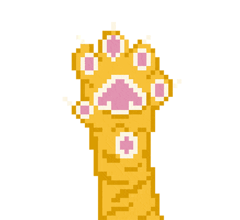
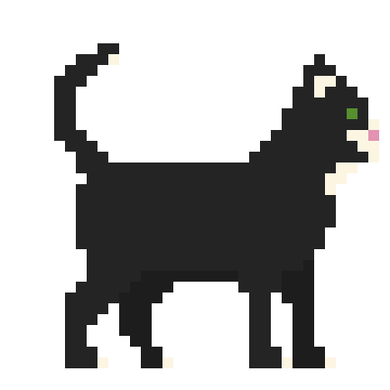
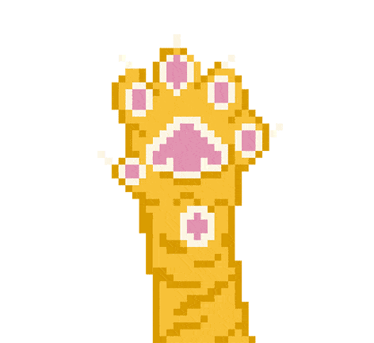
 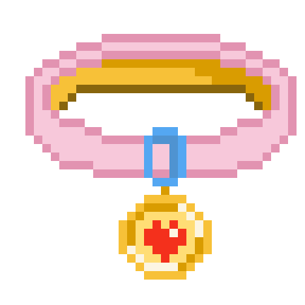
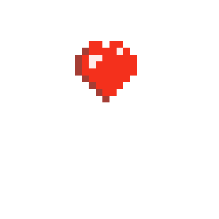
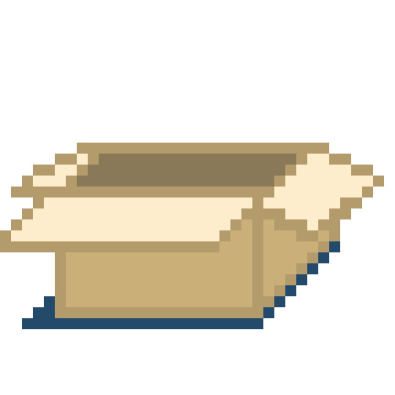
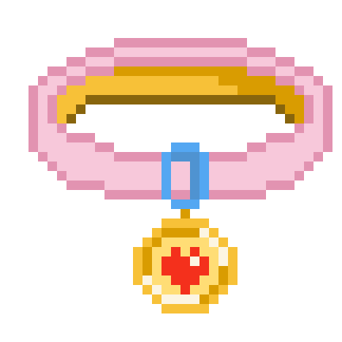
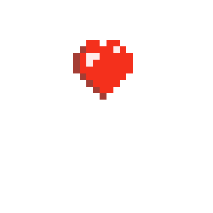
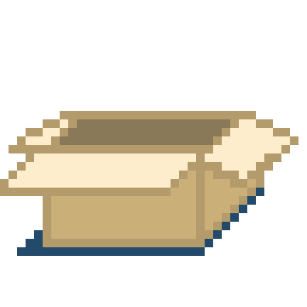


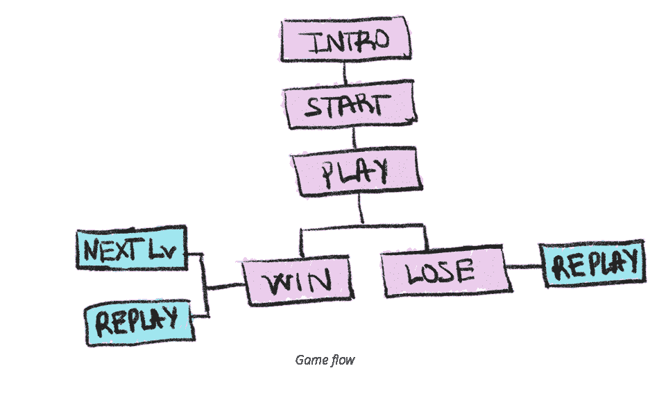
Testing
We conducted three playtests with about 30 players, and I was the investigator who administered the playtests.
Alpha test: Family members, close friends, and people in school were asked to playtest the game and fill out a survey regarding their experience with the game.
We received positive feedback about the game theme and graphics. Most players found the game to be fun. There were also suggestions on improving the graphic resolution
and jumping mechanic, which was too strong. Also, the first level was too difficult to pass which led to frustration among some players.
We then implemented these suggestions by increasing the time limit from 25 to 35 seconds to complete the first level, increased the graphic resolution to a higher quality, and reduced the character's jump height.
Second playtest:
After implementing the changes, players were less frustrated since they have more time to complete the level. The timer count down was moved to the upper right of the screen so players can easily see it when they move the character forward.
Beta Test:
Three levels were completed on time, but there were still some minor bugs that we wish we had more time to fix.
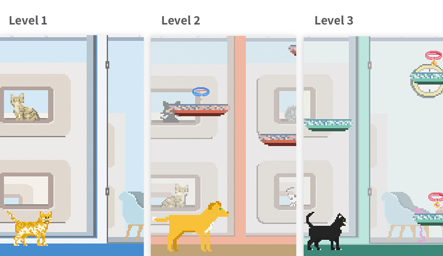
Reflections
Through this project, I learned about the process of creating a game from scratch and how to collaborate with developers to
keep track of progress to deliver the game on time. I also enjoyed interacting with players, observing their reactions to my game, and
receiving their feedback.